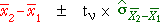
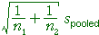

Examples
The examples on this page compare the confidence intervals for the difference between two group means with and without the assumption of equal group standard errors. In both cases, the 95% CI for µ2 - µ1 has the form,

However the details differ depending on whether the two standard deviations are assumed equal:
| degrees of freedom | ||
| Allowing σ1 ≠ σ2 | min( n1 - 1, n2 - 1) | |
| Assuming σ1 = σ2 = σ |  | n1 + n2 - 2 |
Note the 'conservative' formula for the degrees of freedom when we do not assume common standard errors.
You could mention that alternative hypothesis tests for equal group means also use these formulae.
The data sets are described in the questions.